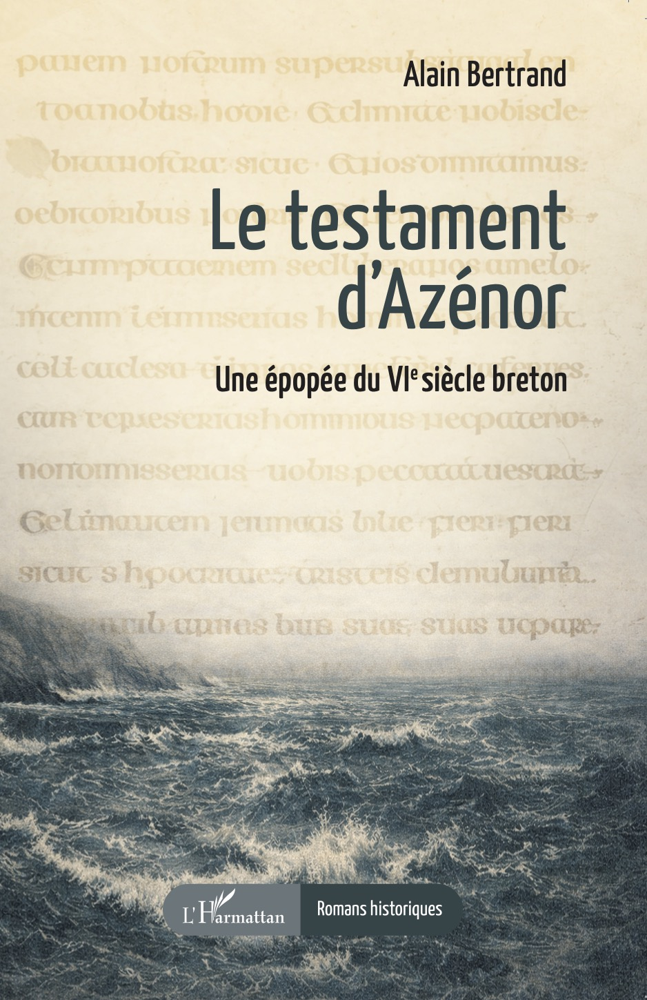

Le Testament d’Azénor
De Brest à l’île d’Ouessant, des îles d’Aran aux rivages sauvages de Bréhat, ce roman plonge dans la fabuleuse légende d’Azénor et de son fils Budoc, entre histoire et mystère.
Accusée d’adultère, la jeune princesse Azénor est condamnée à dériver sur l’océan. Son fils Budoc naît au cœur des îles d’Aran et grandit sous la protection de saint Enda, dans une école monastique où se forgent les grands esprits de son temps. Devenu moine à son tour, il ramènera en Armorique l’héritage de son maître et fondera sur l’île de Lavrec une école où s’épanouiront savoir et foi.
Mais au centre de cette fresque historique se trouve un manuscrit, rédigé par Tadhgán l’Irlandais, ancien druide devenu moine et précepteur d’Azénor. Un texte qui renferme une vérité capable de bouleverser les certitudes et d’attiser les convoitises. Trahisons, rivalités et luttes d’influence s’entrelacent autour de ces pages interdites, tandis que l’avenir de la Bretagne et de l’Irlande se dessine dans l’ombre des monastères et des prophéties.
S’appuyant sur les Vies des Saints de Bretagne et d’Irlande, ce roman historique, aux allures de polar médiéval, mêle réalité et légende dans une épopée où le savoir peut être un héritage… ou une malédiction.